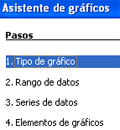
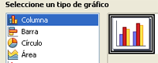
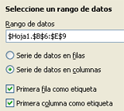
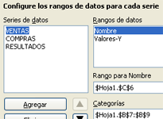
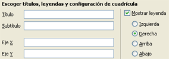
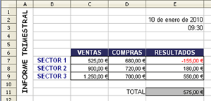

Hojas de cálculo
5.2. Trabajar con gráficos con el Asistente
Importante
La creación de un gráfico no es una tarea de dibujo. El programa OpenOffice.org Calc dispone de un Asistente de gráficos que se activa en el menú "Insertar" "Gráfico" o en el icono:.

Antes de abrir el Asistente de gráficos, es necesario seleccionar las series, es decir, las categorías y los valores que van a formar el gráfico.
A continuación, los pasos a seguir para crear un gráfico son los siguientes:
| 1. Elegir el tipo de gráfico (columna, barra, círculo, ...). | 2. Seleccionar el rango de datos. |
|
 |
 |
| 3. Establecer las series de datos (configurar los rangos). | 4. Modificar los elementos del gráfico. |
|

|

|
Ejercicio resuelto
En la tema 1 de la unidad realizamos una hoja de cálculo para trabajar con los diferentes formatos y guardamos el libro con el nombre "Informe.ods".
Siguiendo los pasos explicados anteriormente hemos realizado el gráfico del informe que aparece en dicha hoja de cálclulo.

Antes de abrir el Asistente de gráficos, hemos seleccionado el rango B6:E9 .
Comprueba lo aprendido
Ahora es tu turno. Realiza el gráfico del ejercicio anterior y contesta las siguientes preguntas sobre los distintos pasos del Asistente de gráficos.
Obra publicada con Licencia Creative Commons Reconocimiento No comercial Compartir igual 4.0